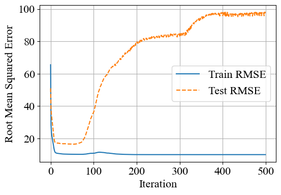

Prédiction de Durée

01. Le Contexte
La durée d'un film est un facteur clé de sa production et de sa distribution, influençant directement la programmation des salles de cinéma et l'engagement du public. L'objectif de ce projet est d'explorer la prédiction de la durée d'un film (une variable continue) en se basant sur ses métadonnées cinématographiques : le budget, les revenus, les genres, l'année de sortie, la langue ou encore les notes du public.
02. La Méthodologie
- Préparation des données : Utilisation de la base de données "The Movie Dataset" (TMDB) provenant de Kaggle, filtrée pour obtenir 5 369 films exploitables. Les distributions très asymétriques du budget et des revenus ont été normalisées à l'aide d'une transformation logarithmique.
- Encodage et ingénierie : Nouvelles variables créées en calculant le carré de chaque caractéristique quantitative pour capturer de potentielles relations non linéaires. Les variables catégorielles complexes (genres multiples, pays) ont été transformées en colonnes binaires (One-Hot Encoding).
- Modélisation : Implémentation et comparaison de trois algorithmes (standardisés et évalués via une validation croisée à 5 plis) : Régression Linéaire classique, Régression LASSO (avec pénalisation L1), et Réseau de Neurones artificiels (MLPRegressor).
03. Visualisations & Performances
Les figures suivantes retracent l'évolution de l'analyse visuelle de nos données : la distribution initiale montre une très forte concentration des durées de films autour de la barre des 100 minutes (Fig. 1). En parallèle, la courbe d'erreur du réseau de neurones (Fig. 3) illustre la stabilisation de l'apprentissage du modèle au fil des itérations.

Fig 1. Distribution de la variable cible (Durée des films en minutes)

Fig 3. Courbe d'apprentissage et d'erreur (RMSE) du réseau de neurones

Fig 2. Nuages de points des valeurs prédites par rapport aux valeurs réelles (Modèle Linéaire, LASSO et Réseau de Neurones)
Performances Comparées
Le tableau comparatif synthétise les erreurs (RMSE) de chaque algorithme. L'écart très réduit entre l'erreur d'entraînement et l'erreur de test (environ 1.6 minutes d'écart) indique une variance faible. De manière contre-intuitive, le réseau de neurones sous-performe face à la Régression LASSO, confirmant que la régularisation L1 est la méthode la plus efficace pour filtrer le bruit des métadonnées de notre échantillon.
| Algorithme Évalué | Erreur d'Entraînement (RMSE) | Erreur de Test (RMSE) |
|---|---|---|
| Régression Linéaire | 14.62 | 16.33 |
| Régression LASSO (L1) | 14.68 | 16.29 |
| Réseau de Neurones (MLP) | 14.84 | 16.71 |
Tab 1. Résumé des performances finales par algorithme (exprimées en minutes d'erreur)
Conclusion clé : Bien que le budget, le genre et l'époque de sortie fournissent un signal prédictif indéniable (le modèle prédit la longueur du film avec une marge d'erreur d'environ 16 minutes), ils ne suffisent pas à capturer toute la complexité de la durée. Celle-ci reste fondamentalement influencée par des choix artistiques et des spécificités de production intrinsèquement humains.
04. Fichiers & Code Source
Consultez mon rapport scientifique, explorez mes données ou lisez mon code Python directement via les liens ci-dessous :